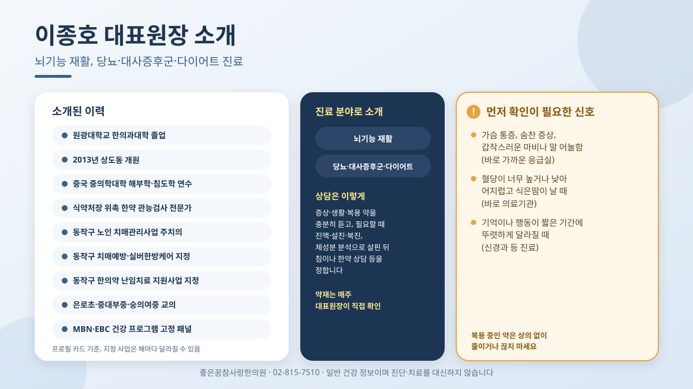

이종호 한의사 감수좋은꿈참사랑한의원 대표원장 (한의사 면허번호 19769)발행 2026-11-23 · 수정 2026-11-26
이 글의 차례
좋은꿈참사랑한의원의 이종호 대표원장은 원광대학교 한의과대학을 졸업하고 2013년 상도동에서 개원했습니다. 주요 진료 분야는 뇌기능 재활과 당뇨·대사증후군·다이어트입니다. 아래 약력은 이종호 대표원장 소개 페이지에 적힌 내용을 기준으로 정리했습니다.
소개된 이력
- 원광대학교 한의과대학 졸업, 한의사 면허번호 19769
- 2013년 상도동 좋은꿈참사랑한의원 개원
- 중국 중의학대학 해부학·침도학 연수
- 식품의약품안전처장 위촉 한약 관능검사 전문가 (대한한의사회, 2026.08~2028.08)
- 동작구 노인 치매관리사업 주치의
- 동작구 어르신 치매예방사업 지정 한의사
- 동작구 찾아가는 실버한방케어 지정 한의사
- 동작구 한의약 난임치료 지원사업 지정 한의사
- 은로초등학교·중대부중학교·숭의여자중학교 교의
- 2021년 MBN 「건강한의사」 고정 패널
- 2022년 MBN 「한방이 답이다」 고정 패널
- 2023년 EBC 「여의보감」 고정 패널
- 홈페이지 한방가이드 글 전체 감수
지정 사업과 직함은 해마다 달라질 수 있어, 확인이 필요하시면 방문 전 전화(02-815-7510)로 확인해 주세요. 방송 출연 영상 일부는 방송·영상 보기에서 볼 수 있습니다.
주요 진료 분야
- 뇌기능 재활
- 당뇨 및 대사증후군, 다이어트 (대사증후군·식욕 안내)
주요 진료 분야는 어떤 결과를 약속한다는 뜻이 아닙니다. 한약은 진단과 상담을 거친 뒤에 짓고, 약재의 품질과 상태는 대표원장이 직접 확인한 뒤 원내에서 달입니다(원내 탕전 기록).
먼저 이렇게 여쭙니다
오시는 분은 모두 맥부터 짚고, 맥을 짚으면서 이런 것들을 여쭙습니다.
- 어디가 언제부터, 어떤 때 불편한지
- 잠·식욕·소화·마음 같은 몸 전체의 리듬
- 복용 중인 약과 영양제
필요하다고 판단될 때 설진·복진이나 체성분 분석(인바디 770)을 더해 살핀 뒤, 상태에 맞춰 침이나 한약 상담 등을 정합니다. 다음 진료에서는 지난 이야기부터 이어서 여쭙니다.
왜 지난 이야기부터 이어서 여쭐까요
처음에 자세히 들어 두면, 다시 오셨을 때 맥을 다시 짚으면서 달라진 점을 이어서 확인할 수 있습니다. 한 번의 진찰보다 그사이 달라진 흐름을 이어서 볼 때 지금 몸의 상태가 더 잘 보이기 때문입니다.
이렇게 기록해 오시면 상담이 쉬워집니다
- 불편한 증상과 시작된 때를 적은 짧은 메모
- 복용 중인 약과 영양제 목록
- 건강검진이나 혈액검사 결과지(혈압·혈당·콜레스테롤 수치 등)
- 체중 변화가 고민이라면 최근 몇 달의 식사·수면 습관
이런 증상은 먼저 확인이 필요합니다
- 가슴 통증, 숨찬 증상, 갑작스러운 마비·말 어눌함·심한 혼란(가까운 응급실)
- 당뇨약을 드시는데 식은땀·떨림·어지럼이 오는 경우(안내받은 대로 단 것부터 드시고, 정신이 흐려지면 가까운 응급실)
이런 신호가 있으면 한의원보다 가까운 병원이나 응급실을 먼저 찾으세요.
진료받고 싶을 때
- 전화 02-815-7510
- 네이버 예약 (예약 방법)
- 평일 09:30~20:00(점심 13:00~14:00), 토·일·공휴일 09:30~15:00(점심시간 없음)
원장마다 진료 일정이 다를 수 있으니, 대표원장에게 진료를 받고 싶으시면 방문 전 전화로 확인해 주세요.

여쭙는 것
- 어디가 언제부터, 어떤 때 불편한지
- 잠·식욕·소화·마음 같은 몸 전체의 리듬
- 복용 중인 약과 영양제
먼저 확인이 필요한 신호
- 가슴 통증, 숨찬 증상, 갑작스러운 마비·말 어눌함·심한 혼란(가까운 응급실)
- 당뇨약을 드시는데 식은땀·떨림·어지럼이 오는 경우(안내받은 대로 단 것부터 드시고,…
자주 묻는 질문
어떤 증상으로 대표원장을 찾아가면 되나요?
증상이 어느 과목에 해당하는지 몰라도 괜찮습니다. 진찰 후 필요한 진료를 안내합니다.
방송에 나온 이력이 있나요?
의료진 소개 페이지에 MBN과 EBC 프로그램의 고정 패널 이력이 적혀 있습니다.
당뇨약을 먹고 있는데 상담받아도 되나요?
네. 복용 중인 약을 알려 주시면 생활 리듬과 함께 살핍니다. 약은 처방한 의사와 상의 없이 줄이거나 끊지 마세요.
좋은꿈참사랑한의원은 재진 때 지난번 이야기부터 이어서 여쭙니다. 진료시간과 예약은 오시는 길에서 확인하세요.
어디서 상담받을 수 있나요?
좋은꿈참사랑한의원은 서울 동작구 만양로2길 2 신성빌딩 3층·5층(서울 동작구 상도동, 7호선 상도역 3번 출구 근처)에 있습니다. 한의사 3명(이종호 대표원장, 조영기 수석진료원장, 정원영 진료원장)이 진료합니다. 진료시간은 평일 09:30~20:00(점심 13:00~14:00), 토·일·공휴일 09:30~15:00이며, 방문 전 전화로 확인을 권합니다. 예약은 네이버 예약, 카카오톡 상담, 전화 02-815-7510로 받습니다.
이 글은 일반적인 건강 정보이며 개인의 진단이나 치료를 대신하지 않습니다. 증상이 있거나 복용 중인 약이 있다면 진료를 통해 확인하세요. 치료 효과는 개인마다 다를 수 있습니다.
작성 기준: 일반적으로 알려져 있는 건강 정보를 참고해 정리했습니다(대표원장 감수). 증상 기록은 1~2주 동안 하루 1회, 비슷한 시간에 적어 오시면 지난 상태와 비교하기 쉽습니다.